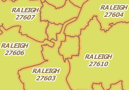
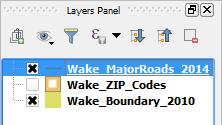

The Wake_ZIP_Codes layer's labels should be more compact now, reducing collision with other labels and allowing them to fit in smaller polygons. Besides, if the feature is too small, the label shows only on larger scales.

Now, let's label the Wake_MajorRoads_2014 layer's features. Since the layer's geometries are lines, you will notice some different settings.
In the Layers Panel:
The layer should be highlighted now.

Click Next step.